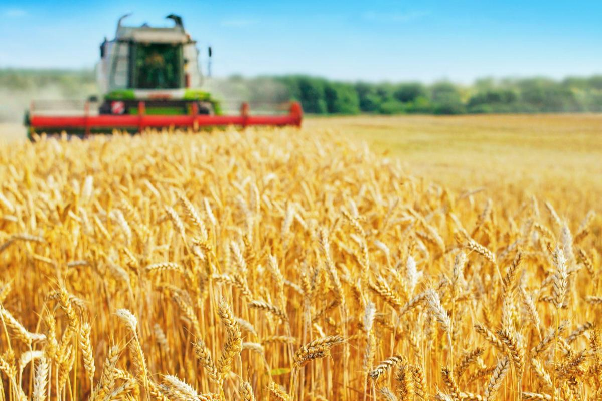
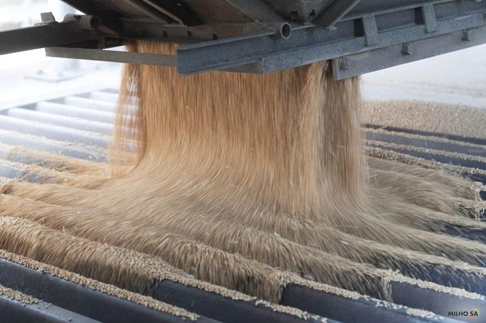

O trigo é um dos cereais mais antigos e mais amplamente cultivados no mundo. Sua importância transcende
a simples produção agrícola, desempenhando um papel crucial em diversas esferas da sociedade, desde a
alimentação básica até a economia global. O trigo é, sem dúvida, um pilar fundamental para a alimentação
humana, sendo a principal fonte de sustento para bilhões de pessoas em todo o planeta.
O trigo é a base de uma enorme variedade de alimentos consumidos diariamente. Pães, massas, bolos,
biscoitos e uma infinidade de outros produtos derivados do trigo são essenciais em dietas ao redor do
mundo. A farinha de trigo, obtida pela moagem dos grãos, é rica em carboidratos, que são a principal
fonte de energia para o corpo humano. Além disso, o trigo contém proteínas, fibras, vitaminas e minerais
que contribuem para uma alimentação balanceada. Em muitas culturas, o trigo é considerado um alimento
sagrado, simbolizando fartura e prosperidade.
O trigo também é vital para a segurança alimentar global. Como um alimento básico, ele é cultivado em
quase todos os continentes e em uma variedade de condições climáticas, o que torna o trigo um recurso
altamente resiliente. A capacidade do trigo de ser estocado por longos períodos sem perder seu valor
nutricional é outra característica que reforça sua importância na segurança alimentar. Em tempos de
crise, como guerras ou desastres naturais, os estoques de trigo desempenham um papel crucial na
alimentação de populações inteiras.

|
CaracterísticasO trigo é um dos cereais mais importantes cultivados no mundo, sendo a base de
alimentação de grande parte da população global. Existem diversas variedades de trigo,
sendo as mais comuns o trigo duro (Triticum durum) e o trigo mole (Triticum aestivum).
Essas variedades diferenciam-se por suas características físicas, químicas e de uso na
culinária e na indústria.
|
|---|
ExportaçãoO comércio internacional de trigo é um dos pilares da economia agrícola global. Grandes
produtores como Estados Unidos, Canadá, Rússia e União Europeia dominam o mercado de
exportação, enquanto países como Egito, Indonésia e Brasil estão entre os maiores
importadores.
|
 |
|---|
|  |
Moagem do trigoA moagem do trigo é um processo fundamental na produção de farinha, o produto final mais
importante obtido a partir desse cereal. A moagem envolve a transformação dos grãos de trigo
em farinha, que é amplamente utilizada na fabricação de pães, massas, biscoitos e outros
produtos alimentícios.
|
|---|